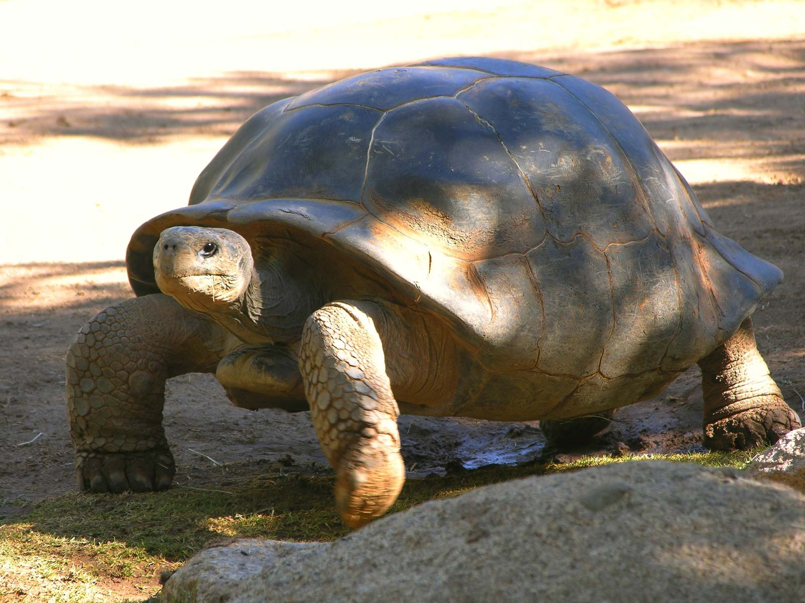
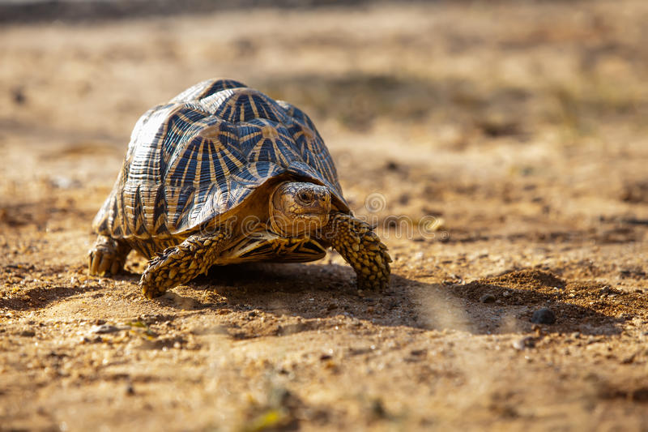

The Tortoise
Tortoises are found worldwide with the most famous tortoise of all, the Giant Tortoise Lonesome George who lives on the Galapagos Islands near Ecuador. Tortoises, like their aquatic cousins, the Turtles, have a hard shell which protects their body.

The top shell is called the carapace (a dorsal section of an exoskeleton or shell) and the bottom is called the plastron (the nearly flat part of the shell structure). The carapace and the plastron are connected by what is called the ‘bridge’. The shell is covered with scutes which are scales that are made of keratin (the same protein that our fingernails are made of). The carapace can help indicate the age of the tortoise by the number of concentric rings, much like the cross-section of a tree.
Many tortoises can retract their head, their four limbs and tail into the shell for protection. Tortoises have a beak but no teeth and no external ears, just two small holes on the sides of the head. Tortoises can vary in size from a few centimetres up to two metres in length. Male tortoises tend to have a longer, protruding neck plate than their female relatives.
Tortoises tend to be diurnal (active during the day) animals with tendencies to be crepuscular (animals that are primarily active during the twilight), depending on the ambient temperatures. Tortoises are generally reclusive and shy creatures.
